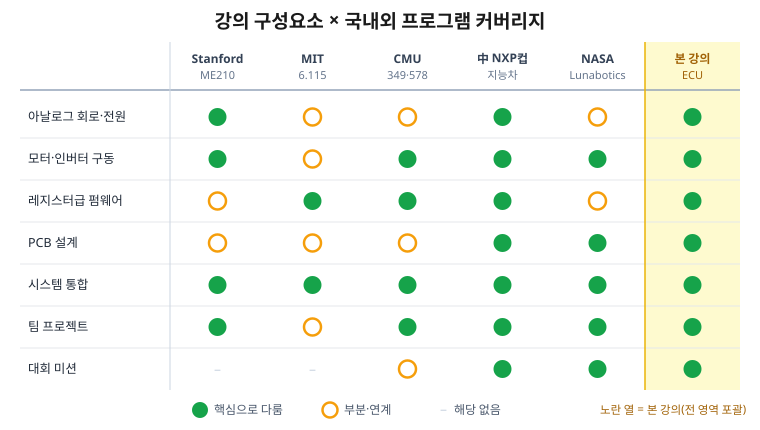
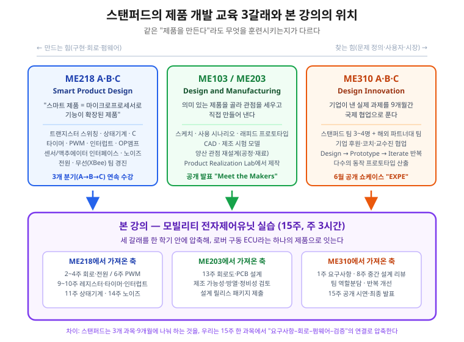
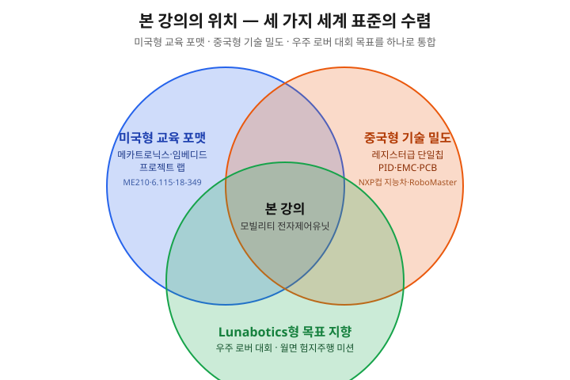

국내외 대학·대회 동향 (벤치마크)¶
조사 기준일 2026-07. 이 페이지는 "회로 → 모터 제어 → 임베디드 펌웨어 → PCB → 시스템 통합을 하나의 로버/모빌리티 프로젝트로 배우는 강의"가 해외 유수 대학과 국제 경진대회에 실제로 존재하는지 확인하고, 본 강의(모빌리티 전자제어유닛 · 우주 로버 대회 팀 프로젝트)가 그 흐름의 어디에 위치하는지 보여준다. 출처는 각 대학·대회의 공개 강의계획/규정 페이지다.
한눈에 보기¶
결론 — 본 강의는 세계 표준 흐름과 정확히 일치한다
- 미국은 이 과목을 메카트로닉스/임베디드 프로젝트 랩(Stanford ME210, MIT 6.115, CMU 18-349/18-578)으로 개설한다 — 아날로그 회로·전원·DC/BLDC 모터·이벤트 구동 펌웨어 + 대형 팀 프로젝트가 핵심으로 본 강의 커리큘럼과 사실상 동일 구조다.
- 미국 대회로는 NASA Lunabotics(월면 로버·베름 작업, 커스텀 PCB·전 모터 엔코더·자율주행)가 본 강의의 우주 로버 대회(월면 험지주행) 프레이밍과 직접 대응된다.
- 중국은 "恩智浦(NXP)杯" 전국대학생 지능자동차 경진대회가 대표적 — 단일칩(레지스터급) + PID 폐루프 모터 제어 + EMC/접지 설계 + PCB로 본 강의의 기술 축과 거의 완전히 겹친다. 여기에 RoboMaster(DJI) 가 임베디드·전력·제어를 결합한 초대형 산학 플랫폼으로 존재한다.
- 한국도 KAIST가 국제 화성로버대회(URC) 본선에 진출하는 등 학생 로버·자율주행 생태계가 형성돼 있고, 본 강의는 이를 정규 전공 교과로 체계화한 사례다.

그림 1. 해외 대표 프로그램은 각자 특정 축에 강점이 있는 반면, 본 강의(노란 열)는 전 구성요소를 하나로 포괄하도록 설계되었다.
1. 미국 — 대학 정규 강의¶
| 대학 / 과목 | 성격 | 본 강의와의 접점 |
|---|---|---|
| Stanford ME210 — Introduction to Mechatronics | A/D·D/A, 연산증폭기, 필터, 전력소자, 이벤트 구동 프로그래밍, DC/스텝 모터·솔레노이드·센싱 + 대형 오픈엔드 팀 프로젝트 | 2~10주차(전자부품·전원·모터·펌웨어) + 팀 프로젝트 구조가 거의 1:1 |
| Stanford ME218 A·B·C — Smart Product Design | "스마트 제품 = 마이크로프로세서로 기능이 확장된 제품". 트랜지스터 스위칭·상태기계·C 레지스터 프로그래밍·타이머·PWM·인터럽트·OP앰프·센서/액추에이터 인터페이싱·노이즈·전원. 3개 분기 연속 팀 경진 | 본 강의와 주제 목록이 가장 근접. 2~4·6·9~11·14주차가 ME218 A·B 항목과 그대로 겹침 |
| Stanford ME103/ME203 — Design and Manufacturing | 제품을 골라 관점을 세우고 Product Realization Lab에서 직접 제작. 래피드 프로토타입·CAD·제조 시험 모델·양산 관점 재설계, 공개 발표 "Meet the Makers" | 13주차 PCB 설계와 제조 가능성·방열·정비성 검토, 설계 릴리스 패키지 |
| Stanford ME310 A·B·C — Design Innovation | 기업 후원 실제 과제를 9개월간 국제 협업으로 해결. 스탠퍼드 팀 3~4명 + 해외 파트너 대학 팀. Design→Prototype→Iterate 반복, 6월 공개 쇼케이스 "EXPE" | 1주차 요구사항 정의, 8주차 중간 설계 리뷰, 15주차 공개 시연·발표의 원형 |
| MIT 6.115 — Microcomputer Project Laboratory | 마이크로컨트롤러로 "실제 문제를 푸는 유용한 시스템"을 설계하는 프로젝트 랩 | 8~10주차 STM32 레지스터 제어 + 15주차 통합 |
| CMU 18-349 — Introduction to Embedded Systems | 액추에이터·모터 드라이브·센서·전자 인터페이스·MCU 하드웨어/프로그래밍·기초 제어 | 6~10주차(인버터·PWM·PI·ADC/UART)와 직접 대응 |
| CMU 18-578 — Mechatronic Design | 18-349를 선수과목으로 하는 상위 메카트로닉스 설계(팀) | 본 강의 11~15주차(요구사항→PCB→통합→발표) 성격 |
| Georgia Tech (ME/ECE) 메카트로닉스·로보틱스 캡스톤 | 부품 설계·제작 + 임베디드 제어 시스템 구축 + 로봇 통합 | 12~15주차 PCB·통합·캡스톤 |
시사점 — 미국 상위권은 "회로+모터+펌웨어+프로젝트"를 한 과목으로 묶는다. 본 강의의 15주 구성은 이 표준 포맷을 우주 로버 대회라는 하나의 목표로 재편한 것이다.
스탠퍼드의 "제품 개발" 3갈래와 본 강의¶
스탠퍼드는 제품 개발을 성격이 다른 세 과목으로 나눠 가르친다. ME218은 만드는 힘(임베디드 구현), ME203은 제조 가능성, ME310은 찾는 힘(문제 정의·팀·반복)에 각각 무게를 둔다. 본 강의는 이 세 축을 15주 한 과목에 압축한다.

차이는 분량이 아니라 압축률이다. 스탠퍼드가 3개 과목·9개월에 걸쳐 하는 것을 15주 안에 넣으려면 부품 수를 늘릴 수 없다. 그래서 본 강의의 평가 기준은 "완성품 제작"이 아니라 "요구사항–회로–펌웨어–검증이 연결된 설계 설명 능력" 이다.
1주차 OT 활용
ME218 프로젝트 아카이브는 2008년부터 최근까지 팀별 최종 프로젝트를 연도별로 공개한다. 2024–2025년 주제는 ME218A "Interactive Elaborate Ethereal Entertainment", ME218B "CARRY Us to Victory: Build Me a Forklift", ME218C "Jailbreak!! Navigate the Flood to Escape the Warehouse"였다. OT 마지막 10분에 한 해를 열어 함께 보고 다음을 토의한다.
- 저 프로젝트들과 우리 로버 ECU는 기술적으로 무엇이 같고 무엇이 다른가?
- 한 학기에 저 수준까지 가려면 15주 중 어디를 덜어내야 하는가?
- 우리 팀은 15주 뒤에 무엇을 "보여줄" 것인가?
스탠퍼드 자료의 사진·영상은 저작권이 있으므로 수업 중에는 링크를 직접 열어 보여주고 배포 자료에는 복제하지 않는다. 배포본의 그림은 위 자작 도식을 쓴다.
2. 미국 — 국제/전국 경진대회¶
| 대회 | 주최·성격 | 전자·제어 요구 | 본 강의 대회 연계 |
|---|---|---|---|
| NASA Lunabotics | NASA, 2010~ 매년, 2학기 연속 설계·제작·운용 | 커스텀 PCB, 모든 모터·액추에이터에 엔코더, 밀폐형 전장함, 자율주행 (심사: 베름 규모·중량·통신·에너지·자동화) | 우주 로버 대회(월면 험지주행) 프레이밍의 직접 원형 |
| University Rover Challenge (URC) | The Mars Society, 유타 MDRS(화성 모사지형) | 로버 구동·조향·통신·매니퓰레이터 전장 | 대회형 팀 프로젝트 운영 모델 |
| IGVC / SAE 계열 | 지상 자율주행·자작 전기차 | 모터 제어·전원·센서 통합 | 구동·전원 설계 실습 근거 |
3. 중국 — 대학 강의와 대형 경진대회¶
중국은 경진대회가 사실상 커리큘럼을 견인하는 구조로, 본 강의의 기술 축(단일칩·모터 제어·PCB·EMC)과 가장 많이 겹친다.
| 대회 | 규모·역사 | 기술 내용 (본 강의 대응) |
|---|---|---|
| "恩智浦(NXP)杯" 전국대학생 지능자동차 경진대회 | 2006~, 2016년 NXP컵 개칭, 2020년부터 NXP·Infineon·STC 칩 개방 | NXP Kinetis 32비트 단일칩(레지스터급 제어) · 카메라/전자기 경로인식 · PID 폐루프 DC 모터 + 서보 조향 · EMC 설계(접지·차폐·필터) · PCB — 제어·패턴인식·센싱·자동차전자·기계·에너지 융합 |
| RoboMaster (DJI) | 2015~, 매년 400+ 대학, 누적 45,000명 엔지니어 배출 | 머신비전 + 임베디드 시스템 설계 + 기계 제어 + 관성항법 (전력·모터·제어 통합 플랫폼) |
| 전국대학생 로봇대회(全国大学生机器人大赛) | Robocon·ROBOTAC·RoboMaster·창업 부문 | 임베디드 제어 전반 |
시사점 — 중국의 지능차 대회 기술보고서는 "단일칩 + PID 폐루프 모터 제어 + 접지/차폐/필터 EMC + PCB" 를 표준 목차로 쓴다. 이는 본 강의 5~14주차(모터→인버터→PI→STM32→PCB·노이즈)와 거의 동일하다. 즉 본 강의는 중국 지능차 대회 준비 커리큘럼의 정규 교과 버전에 해당한다.
4. 한국 — 국내 생태계¶
| 활동 | 주체 | 성격 |
|---|---|---|
| URC 본선 진출 (2026) | KAIST 학부 로버팀(MR2) | 세계 최대 화성 로버 대회 본선 — 국내 학생 로버 역량 입증 |
| 우주 로버 대회 (본 강의 목표) | 우주항공청(KASA) 연계 프레이밍 | 월면 험지주행·경사극복 팀 미션 → 본 강의의 최종 프로젝트 |
| A1 자율주행 챌린지 / 대학생 AI·SW 모빌리티 경진대회 | 국토부·교통안전공단·자동차안전학회 | 자율주행 소프트웨어 중심 |
| 자작자동차대회(Baja·Formula·e모빌리티) | 한국자동차공학회(KSAE) | 차량 제작·구동 전반 |
시사점 — 국내는 대회·동아리 중심으로 로버/자율주행 열기가 크지만, 회로→모터→펌웨어→PCB→로버 통합을 정규 15주 전공으로 체계화한 사례는 드물다. 본 강의는 그 공백을 메우는 위치에 있다.
5. 본 강의의 위치¶

그림 2. 본 강의는 세 흐름이 겹치는 지점에 위치한다 — 미국형 교육 포맷 + 중국형 기술 밀도 + 우주 로버 대회 목표.
graph LR
A["미국형<br/>메카트로닉스·임베디드<br/>프로젝트 랩<br/>(ME210·6.115·18-349)"] --> C
B["중국형<br/>단일칩+PID+EMC+PCB<br/>대회 준비 커리큘럼<br/>(NXP컵 지능차·RoboMaster)"] --> C
C["본 강의<br/>모빌리티 전자제어유닛<br/>회로→모터→펌웨어→PCB→통합"] --> D["우주 로버 대회<br/>(월면 험지주행 팀 미션)<br/>≈ NASA Lunabotics 포맷"]정리 — 세 가지 세계 표준을 하나로 합친 설계
- 강의 포맷은 미국형 메카트로닉스/임베디드 프로젝트 랩(회로+모터+펌웨어+팀 프로젝트)을 따른다.
- 기술 깊이는 중국형 지능차 대회 커리큘럼처럼 레지스터급 단일칩 제어 + PID 폐루프 + EMC/PCB까지 내려간다.
- 목표(성과 지표)는 미국 NASA Lunabotics형 우주 로버 대회 미션으로 설정해, 학습을 명확한 팀 성과로 수렴시킨다.
→ 결과적으로 본 강의는 특정 대학·대회를 모방한 것이 아니라, 미국의 교육 포맷·중국의 기술 밀도·우주 로버 대회의 목표 지향성을 통합한 국내 특화 정규 전공 교과다.
참고 링크 (공개 자료)¶
- Stanford ME210 — Introduction to Mechatronics: https://online.stanford.edu/courses/me210-introduction-mechatronics
- MIT 6.115 — Microcomputer Project Laboratory: https://web.mit.edu/6.115/www/
- CMU 18-349 — Introduction to Embedded Systems: https://courses.ece.cmu.edu/18349
- CMU 18-578 — Mechatronic Design: https://courses.ece.cmu.edu/18578
- NASA Lunabotics Challenge: https://www.nasa.gov/learning-resources/lunabotics-challenge/
- University Rover Challenge (The Mars Society): https://urc.marssociety.org/
- 全国大学生智能汽车竞赛(중국자동화학회): https://www.caa.org.cn/Content/260.html
- RoboMaster (DJI): https://www.robomaster.com/